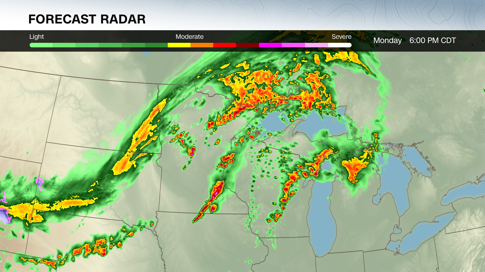

The Bermuda Triangle
The Bermuda Triangle is a triangular region in the North Atlantic Ocean that has been the subject of countless solved and unsolved mysteries related to disappearances. The main question that’s on everybody’s minds with this is: “Why is this happening with such strong correlation, and what can be done to prevent it?”
I believe that the Bermuda Triangle is nothing but a region of dangerous conditions and nothing unnatural is going on here. Multiple government agencies of the US have provided clear reasoning and good support in favor of my argument, such as the Ocean Service and Navy.
Major Theories
Many blame unknown or supernatural forces for the reason behind these cases, but others have provided solid evidence to prove it’s natural. According to the National Oceanic and Atmospheric Administration’s account of the words of the U.S Navy and Coast Guard, “Their experience suggests that the combined forces of nature and human fallibility outdo even the most incredulous science fiction” (NOAA Ocean Service).
Source? (Reasons)
For one, the conspiracy-driven “reasons” that people give for the mysteries surrounding the Triangle are baseless and easy to disprove. Some doubt the simple explanations for the disappearance of flights, and as the Navy website puts it, “Many question that possibility by asking, "How could such experienced pilots get lost? How could all the compasses be wrong?...As for the pilots' experience, Flight 19 was a training flight. Though advanced, it was still training. Even the most "experienced" pilots make mistakes” (U.S. Navy).
But why haven’t we found any remains of these incidents?
There’s actually a reason for this, too; “rogue waves.” These waves can reach up to 100 feet in height and are more than enough to wash away all of the evidence. “The Bermuda Triangle is located in an area of the Atlantic Ocean where storms from multiple directions can converge, making rogue waves more likely to occur” (Britannica).
But most people already know this. These legends are too widespread to be completely fake, right?
The answer is simple and verifiable. If a phenomenon is too complex and/or foreign to be explained with current knowledge, then it spawns conspiracies of outlandish ideas. According to the the Navy’s website, “Before Columbus set sail and found the Americas, it was believed that the world was flat and if you sailed too far west, you would fall off the edge. That reasoning prevails concerning the Devil's Triangle. Since not enough scientific research has been done to explain the phenomenon associated with the area, imagination takes over” (U.S. Navy). It’s happened many times before, and once we gather enough information about the area and publish it, people will disregard these rumors (except for a few people).
Alright. Why isn't more known about the subject already?

It's hard to predict. We don’t know how many storms there will be in the next month, so why would we know exactly how, why, and what led up to a certain event in the deep sea? “There is a 12-hour gap between the time the satellite passes over a specific part of the globe until it passes again. During these 12 hours, any number of brief, violent storms could occur. Quinton said, ‘Thunderstorms can also generate severe electrical storms sufficient to foul up communication systems’” (U.S. Navy).
All of this points to the Triangle being nothing more than a specific patch of rough sea and air.
So, I think that if this triangle had been placed in any other spot of the deep sea, and the same sequence of events happened, it would create the same sequence of misinformation and conspiracy.
thanks for viewing -- made by nic gunter :)